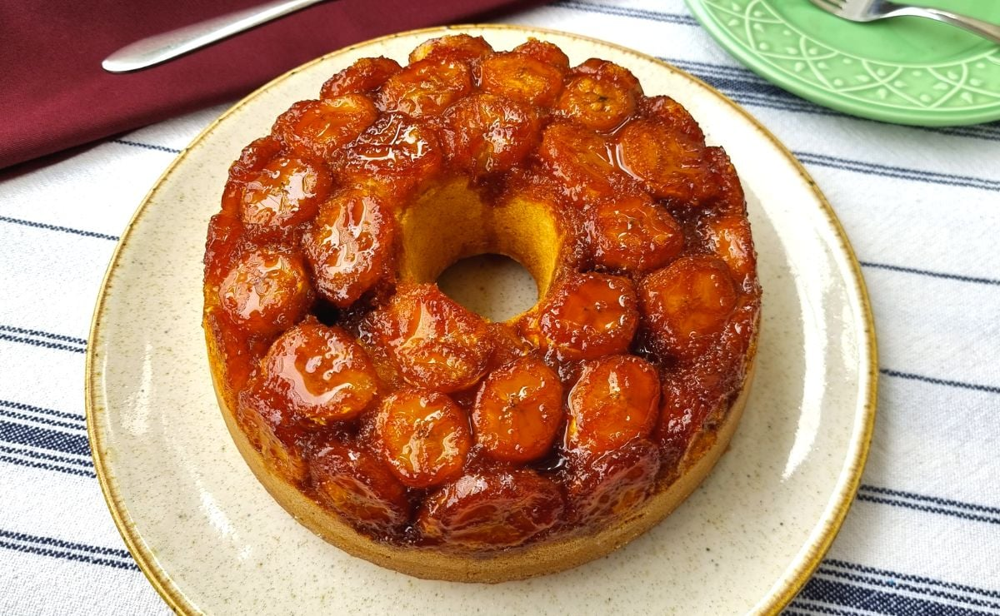
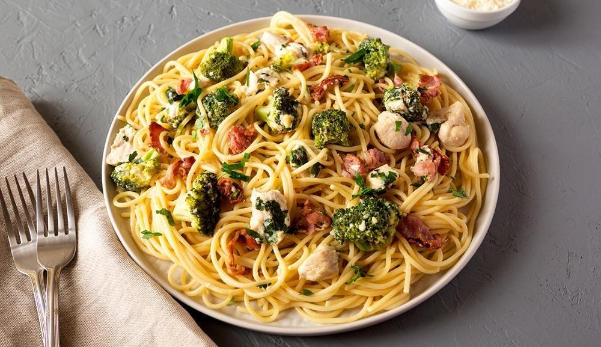
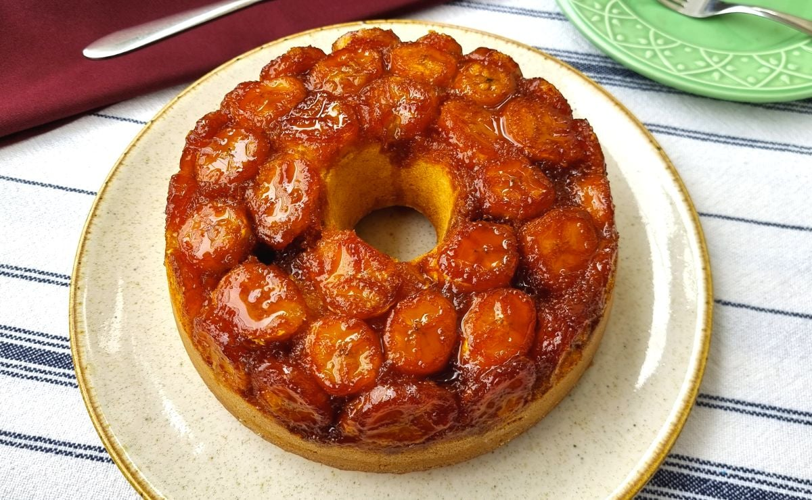
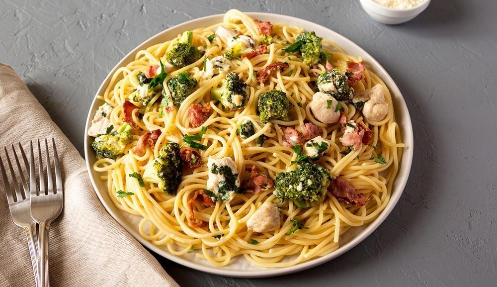

Giovanna Araújo

Data de nascimento: 30, abril de 2008.
Sou uma pessoa que tem muitos hobbies, como crochê, desenhos, dança, vôlei etc. Toco violino e faço parte da orquestra do Injr, atualmente estou cursando Contabilidade na ETEC e gosto muito de estudar inglês. Minha imagem é um macaquinho porque eu me acho parecida com eles, o Mico-Leão-Dourado é meu macaco favorito e talvez animal favorito também, gosto muito de macaquinhos.


 


